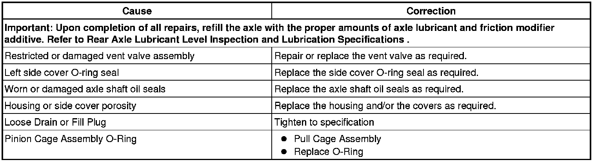

Operation CHARM
: Car repair manuals for everyone.
Home
>>
Cadillac
>>
2008
>>
SRX AWD V8-4.6L
>>
Repair and Diagnosis
>>
Transmission and Drivetrain
>>
Differential Assembly
>>
Testing and Inspection
>>
Component Tests and General Diagnostics
Component Tests and General Diagnostics
Rear Axle Lubricant Leak Diagnosis
